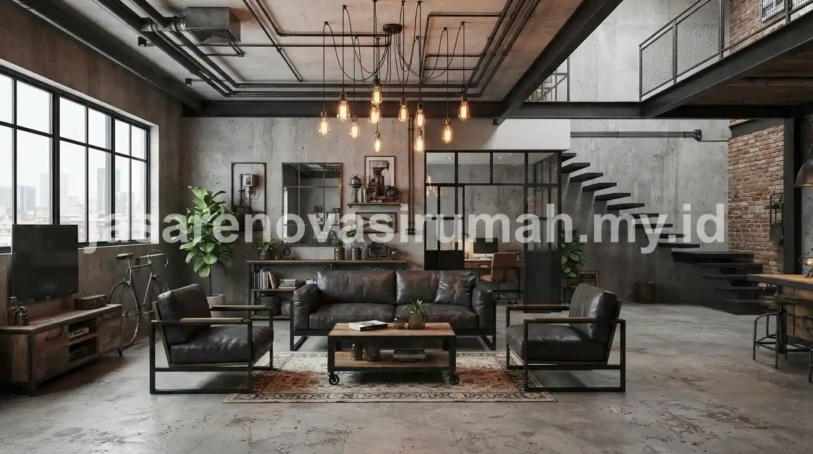

Desain rumah industrial modern mengedepankan material mentah seperti bata ekspos, semen aci halus, dan besi hollow yang sengaja dibiarkan terlihat apa adanya.
Material ini tetap ditata rapi agar tidak berkesan kumuh atau belum selesai dibangun, memberikan estetika yang unik dan berkarakter.
Karakter khas ini lahir dari adaptasi gaya bangunan pabrik dan gudang lama yang kemudian dipadukan dengan sentuhan modern seperti pencahayaan hangat dan furnitur bersih agar tetap nyaman ditinggali sehari-hari.
Apa Karakter Utama Desain Rumah Industrial Modern?
Karakter utamanya adalah membiarkan elemen struktural seperti bata, beton, dan pipa terlihat terbuka sebagai bagian dari estetika, bukan sesuatu yang perlu ditutupi.
Beberapa ciri yang paling mudah dikenali pada rumah bergaya industrial modern:
- Dinding bata ekspos atau plester semen tanpa finishing cat penuh.
- Rangka atap atau plafon dibiarkan terbuka memperlihatkan struktur baja atau kayu.
- Penggunaan besi hollow hitam pada railing tangga, pintu, atau partisi.
- Palet warna gelap dan netral seperti abu tua, hitam, dan cokelat kayu tua.
Gaya ini berbeda dari desain rumah minimalis modern yang cenderung mengandalkan dinding polos rapi dan warna terang.
Meski begitu, keduanya sama-sama mengusung prinsip kesederhanaan bentuk tanpa ornamen berlebihan.
Apa Kelebihan dan Keterbatasan Gaya Industrial untuk Hunian?
Kelebihan utama gaya industrial adalah biaya finishing yang bisa lebih hemat karena sebagian dinding tidak memerlukan plester dan cat penuh.
Namun, gaya ini tetap membutuhkan perhitungan struktur yang matang agar tampilan ekspos tetap aman dan tahan lama.
Beberapa kelebihan dan keterbatasan yang perlu dipertimbangkan:
| Aspek | Kelebihan | Keterbatasan |
|---|---|---|
| Biaya finishing | Bisa lebih hemat pada dinding ekspos | Butuh lapisan pelindung khusus agar tidak lembap |
| Perawatan | Minim kebutuhan cat ulang berkala | Bata ekspos rentan berlumut di area lembap |
| Fleksibilitas desain | Mudah dipadukan dengan furnitur kayu dan besi | Kurang cocok untuk area dengan curah hujan tinggi tanpa proteksi tambahan |
| Kesan ruang | Memberi karakter kuat dan hangat | Bisa terasa gelap jika pencahayaan kurang diperhatikan |
Bagaimana Menerapkan Gaya Industrial agar Tetap Terlihat Rapi dan Estetik?
Kuncinya adalah menjaga kerapian garis dan kebersihan permukaan material ekspos, bukan membiarkan tampilan terkesan asal atau belum jadi.
Beberapa cara agar gaya industrial tetap terlihat estetik dan bukan kumuh:
- Gunakan lapisan coating transparan pada bata atau semen ekspos agar tidak berdebu dan mudah dibersihkan.
- Padukan dengan pencahayaan hangat (warm white) untuk menghindari kesan dingin dan gelap.
- Batasi elemen ekspos hanya pada satu atau dua dinding utama, bukan seluruh ruangan.
- Tambahkan elemen kayu atau tanaman hijau untuk menyeimbangkan kesan keras dari material besi dan beton.
Sebelum menerapkan gaya ini secara menyeluruh, konsultasi dengan jasa desain rumah industrial sangat disarankan.
Hal ini agar pemilihan material ekspos disesuaikan dengan kondisi iklim dan struktur bangunan yang sudah ada, terutama jika diterapkan pada rumah lama yang akan direnovasi.
Contoh Penerapan Desain Industrial pada Berbagai Area Rumah
Gaya industrial bisa diterapkan secara menyeluruh maupun hanya pada area tertentu seperti ruang tamu atau dapur, tergantung preferensi penghuni rumah.
Beberapa contoh penerapan yang umum ditemui:
- Ruang tamu dengan dinding bata ekspos dan sofa kulit berwarna gelap.
- Dapur dengan kitchen set besi hollow dan rak terbuka bergaya gudang.
- Kamar tidur dengan plafon ekspos dan lampu gantung bergaya vintage.
- Fasad rumah dengan kombinasi bata ekspos dan jendela kaca besar berbingkai hitam.

Jika Anda berencana menerapkan gaya industrial ini pada proyek renovasi, ada baiknya anggaran biaya sudah diperhitungkan lebih dulu agar pengerjaan tidak melebihi rencana awal.
Panduan mengenai estimasi RAB renovasi rumah dapat membantu memetakan komponen biaya sebelum memutuskan skala renovasi bergaya industrial ini.
Kesalahan Umum Saat Menerapkan Desain Industrial
Kesalahan paling sering terjadi adalah membiarkan seluruh dinding ekspos tanpa perawatan sama sekali.
Hal ini menyebabkan permukaan cepat kotor dan justru terlihat tidak terawat.
Kesalahan lain yang perlu dihindari:
- Menggunakan bata ekspos pada area yang sering terkena air hujan langsung tanpa perlindungan.
- Mengabaikan sirkulasi udara sehingga ruangan terasa pengap akibat material beton yang menyerap panas.
- Mencampur terlalu banyak gaya lain sehingga karakter industrial jadi kurang menonjol.
Pada akhirnya, desain rumah industrial modern bisa tampil estetik dan hangat asalkan penerapannya terencana dengan baik, bukan sekadar membiarkan material terlihat mentah tanpa sentuhan akhir.
Konsultasikan konsep ini dengan jasa desain rumah industrial berpengalaman agar hasil akhirnya sesuai ekspektasi dan tetap nyaman dihuni jangka panjang.